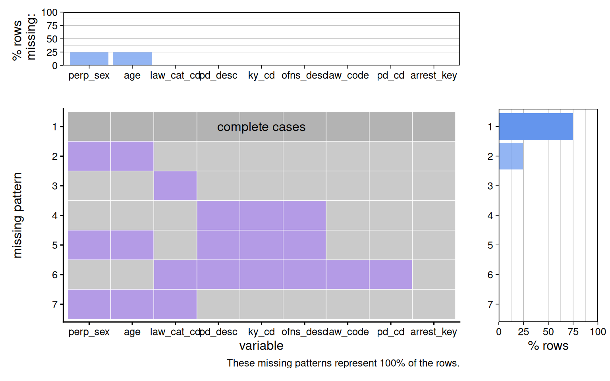
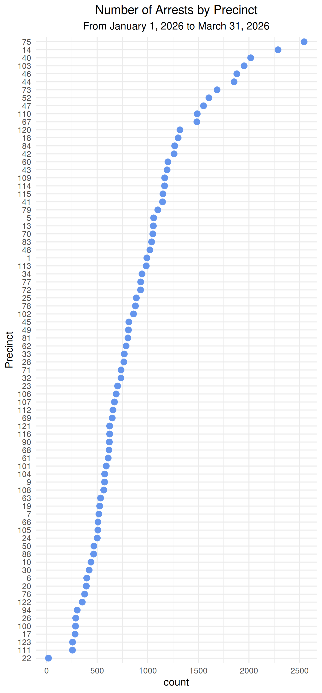
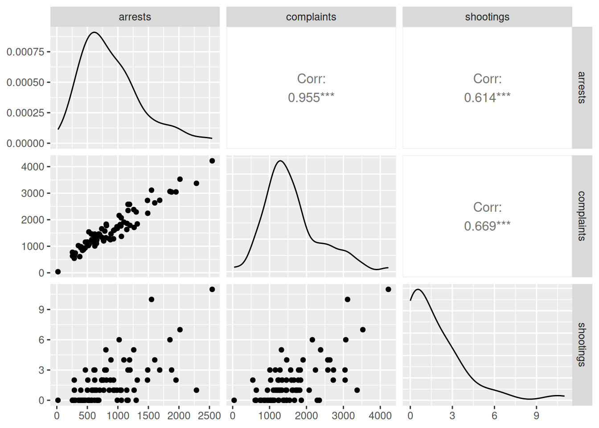
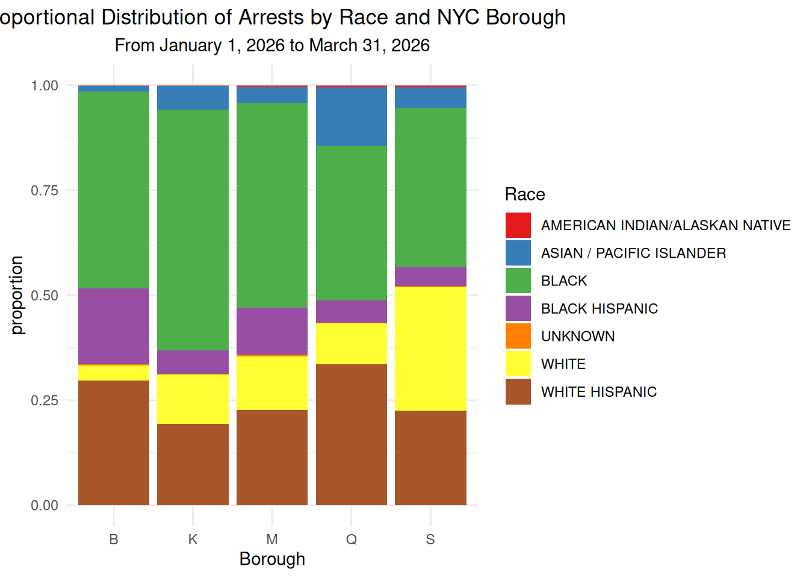
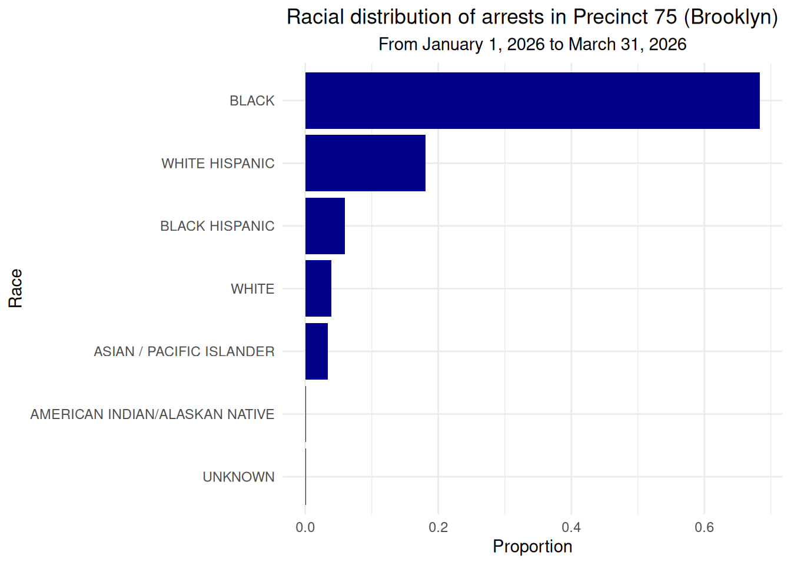
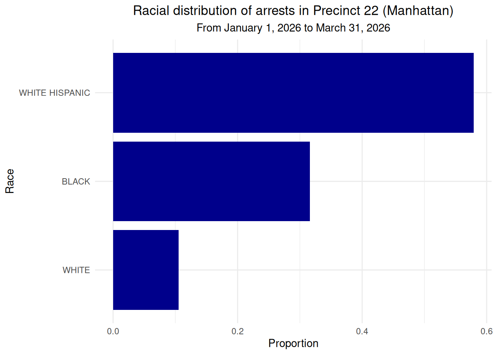

library(tidyverse)
library(sf)
library(readxl)
library(patchwork)
arrests <- read_csv("data/arrests.csv", na = c("(null)", ""))4 NYPD Arrest Data
By: Jade Amaya
4.1 Introduction
Hi everyone, welcome to my project! This project looks at NYPD Arrest Data (YTD) and examines the relationships between arrests, location, demographic characteristics, and other crime indicators. I use precinct-level aggregated data to analyze how arrest patterns vary across NYC and how they relate to complaints, shootings, and race with respect to arrests. I wanted to look at this data set (and related ones) because I have a broader interest in how policing and crime intersect with historical patterns in law enforcement, specifically in the U.S. Some historical context motivating my project is related to slavery patrol systems during the antebellum period that were replaced by modern police systems during the Jim Crow era to reinforce segregation, and recently (as in a few years ago) stop-and-frisk in the late 20th to early 21st century. Amid this context, I use the following datasets to look at statistical relationships that may tell a story as to how arrests are distributed across NYC during this time.
4.2 Data
4.2.1 Description
The data was collected by the NYPD and published by NYC’s Open Data team. The data was imported, using an csv file from the NYPD Arrest (Year to Date) Data set. The dataframe contains 19 columns and 63.5k rows. The data is updated every year some time during mid to late April. Another dataset that I use in this project is also NYPD Complaint data, using an API. To control for time, both datasets are filtered to only include data from this year (1/1/26 - 3/31/26). Some limitations of this dataset is that there is no data provided that informs us whether or not these arrested people were let go, whether they were scheduled a trial, or whether some of these arrests pertain to the same individual; that some demographic information pertaining to individuals are missing; and that even though these people were arrested, cannot say for certain all actually committed the crime.
Here are the links to the datasets:
4.2.2 Missing Value Analysis
arrests <- arrests |>
mutate(mdydate = mdy(ARREST_DATE)) |>
rename(perp_sex = PERP_SEX, age = AGE_GROUP, pd_desc = PD_DESC,
arrest_key = ARREST_KEY, law_cat_cd = LAW_CAT_CD,
law_code = LAW_CODE, x_coord_cd = X_COORD_CD, y_coord_cd = Y_COORD_CD,
ky_cd = KY_CD, jurisdiction_code = JURISDICTION_CODE,
ofns_desc = OFNS_DESC, arrest_boro = ARREST_BORO,
Precinct = ARREST_PRECINCT, perp_race = PERP_RACE,
pd_cd = PD_CD, longitude = Longitude, latitude = Latitude)library(redav)
arrests_new <- arrests |>
select(starts_with(c("perp_sex", "age", "pd_d", "k", "o", "law_", "pd_c", "arrest_key")))
colnames(arrests_new) <- str_remove_all(colnames(arrests_new), "PE")
plot_missing(arrests_new)
Most of the rows in the dataset contained no missing values. Above the graph shows that the second most common pattern had sex and age group missing values. The third pattern included all other columns without missing values, but the level of defense.
4.3 Results
4.3.1 Topic 1: Location of Arrests
4.3.1.1 Where are arrests concentrated?
#|warning: false
library(sf)
nybb <- st_read("nybb_26a/nybb.shp")Reading layer `nybb' from data source
`/home/runner/work/3702project/3702project/nybb_26a/nybb.shp'
using driver `ESRI Shapefile'
Simple feature collection with 5 features and 4 fields
Geometry type: MULTIPOLYGON
Dimension: XY
Bounding box: xmin: 913175.1 ymin: 120128.4 xmax: 1067383 ymax: 272844.3
Projected CRS: NAD83 / New York Long Island (ftUS)nybb <- nybb |>
mutate(BoroCode = recode(BoroCode, `1` = "M", `2` = "B", `3` = "K",
'4' = "Q", '5' = "S")) |>
rename(arrest_boro = BoroCode)graph1 <- ggplot(arrests, aes(x = arrest_boro, fill = arrest_boro)) +
geom_bar() +
labs(title = "Arrest Counts in New York City by Borough",
subtitle = "From January 1, 2026 to March 31, 2026",
y = "count", x = "NYC Borough") +
theme_minimal()points_sf <- arrests |>
select(longitude, latitude, arrest_boro) |>
na.omit() |>
st_as_sf(coords = c("longitude", "latitude"), crs = 4326)
graph2 <- ggplot() +
geom_sf(data = nybb) +
geom_sf(data = points_sf, size = .1, alpha = 0.5, aes(color = arrest_boro)) +
geom_jitter() +
theme_minimal() +
labs(title = "Spatial Distribution of Arrests in New York City",
subtitle = "From January 1, 2026 to March 31, 2026",
x = "longitude", y = "latitude") +
theme(legend.position = "none")4.3.1.1.1 Concentration by Borough
graph2 + graph1
The graphs compare arrest patterns across NYC’s boroughs, with each borough labeled by its abbreviation/first initial letter (except for Brooklyn, represented by “K”). The left spatial graph shows the spatial distribution of individual arrest locations using their respective x and y coordinates, while the right bar graph shows the total number of arrests in each borough. Side by side, the plots show that Brooklyn (n = 21111) has the highest numbers of arrests compared to the other boroughs, while Staten Island (n = 2551) has the lowest.
4.3.1.1.2 Concentration by Precinct
precincts_counts <- arrests |>
count(Precinct) |>
rename(count = n)
ggplot(precincts_counts, aes(x = count, y = fct_reorder(as.factor(Precinct), count))) +
geom_point(size = 4, color = "cornflowerblue") +
labs(y = "Precinct", title = "Number of Arrests by Precinct", subtitle = "From January 1, 2026 to March 31, 2026") +
theme_minimal(18) +
theme(plot.title = element_text(hjust = 0.5), plot.subtitle = element_text(hjust = 0.5))
This Cleveland dot plot displays the distribution of the total amount of arrests from 1/1/26 to 3/31/26 across NYC precincts, with Precinct 75 having the highest number of arrests (n = 2545) and Precinct 22 having the lowest amount of arrests (n = 19).
4.3.2 Topic 2: Arrests and Indicators of Crime Across Precincts
4.3.2.1 What is the association between the number of crime complaints and arrests across precincts?
complaints <- read_csv("https://data.cityofnewyork.us/resource/5uac-w243.csv?$limit=133114", na = c("(null)", ""),
col_types = cols(
cmplnt_num = col_character()))complaints <- complaints |>
mutate(complaint_date = as.Date(cmplnt_fr_dt)) |>
rename(Precinct = addr_pct_cd) |>
filter(complaint_date >= as.Date("2026-01-01"))
complaintsbyprecinct <- complaints |>
count(Precinct) |>
rename(complaints = n)
arrestsbyprecinct <- arrests |>
count(Precinct) |>
rename(arrests = n)
joint_data <- left_join(complaintsbyprecinct, arrestsbyprecinct, by = "Precinct")ggplot(joint_data, aes(x = complaints, y = arrests)) +
geom_point(alpha = 0.6, stroke = 0, size = 2) +
geom_smooth(method = "lm", color = "red", se = FALSE) +
labs(title = "NYPD Arrests vs. NYPD Complaints by Precinct",
subtitle = "From January 1, 2026 to March 31, 2026") +
theme_minimal() +
theme(plot.title = element_text(hjust = 0.5), plot.subtitle = element_text(hjust = 0.5))
The graph presents the relationship between the number of NYPD complaints and arrests across precincts, where each plotted point represents a precinct. There is a strong, positive association between complaints and arrests, suggesting that precincts with more complaints are a strong predictor of arrests (\(\beta = 0.62, p < 0.001\)). Finally, NYPD complaints explain 91.11% of the variation in arrests (\(R^2 = 0.9111\)).
model <- lm(arrests~complaints, data = joint_data)
summary(model)
Call:
lm(formula = arrests ~ complaints, data = joint_data)
Residuals:
Min 1Q Median 3Q Max
-316.52 -96.25 3.00 97.74 321.57
Coefficients:
Estimate Std. Error t value Pr(>|t|)
(Intercept) -110.94292 39.65196 -2.798 0.00651 **
complaints 0.61762 0.02213 27.914 < 2e-16 ***
---
Signif. codes: 0 '***' 0.001 '**' 0.01 '*' 0.05 '.' 0.1 ' ' 1
Residual standard error: 150.5 on 76 degrees of freedom
Multiple R-squared: 0.9111, Adjusted R-squared: 0.91
F-statistic: 779.2 on 1 and 76 DF, p-value: < 2.2e-16shootings <- read_csv("https://data.cityofnewyork.us/resource/5ucz-vwe8.csv?$limit=25000", na = c("(null)", ""))shootings <- shootings |>
mutate(boro = recode(boro, `MANHATTAN` = "M", `BRONX` = "B", `BROOKLYN` = "K",
'QUEENS' = "Q", 'STATEN ISLAND' = "S")) |>
rename(boro = boro, Precinct = precinct) |>
filter(occur_date >= as.Date("2026-01-01"))arrests_num <- arrests |>
count(Precinct) |>
rename(arrests = n)
complaints_num <- complaints |>
count(Precinct) |>
rename(complaints = n)
shootings_num <- shootings |>
count(Precinct) |>
rename(shootings = n)
data <- arrests_num |>
full_join(complaints_num, by = "Precinct") |>
full_join(shootings_num, by = "Precinct")
data$shootings <- replace_na(data$shootings, 0)4.3.2.2 What type of crime indicators are more strongly associated with NYPD arrests across NYC precincts.
library(GGally)
ggpairs(data[, c("arrests", "complaints", "shootings")])
In this scatterplot matrix, each observation represents a NYC precinct. The variables, which are NYPD arrests, NYPD complaints, and NYC shootings, are summed up counts within each precinct. The pairwise plot shows relationships and their correlation coefficients between each combination of the variables, all of which are positive and statistically significant (indicated by the asterisks). The graph also suggests that precincts with higher levels of NYPD complaints are correlated with higher NYPD arrest counts, while shootings have a weaker correlation with higher arrest accounts in comparison.
4.3.3 Topic 3: Arrests by Location and Race
4.3.3.1 Does the racial distribution of arrests differ by NYC borough?
ggplot(arrests, aes(x = arrest_boro, fill = perp_race)) +
geom_bar(position = "fill") +
scale_fill_brewer(palette = "Set1") +
labs(y = "proportion", title = "Proportional Distribution of Arrests by Race and NYC Borough",
fill = "Race", x = "Borough", subtitle = "From January 1, 2026 to March 31, 2026") +
theme_minimal() +
theme(plot.title = element_text(hjust = 0.5), plot.subtitle = element_text(hjust = 0.5))
The bar graph shows the proportional distribution of arrests by race across the five boroughs, with each borough on the x-axis labeled by its first letter initial, with “K” representing Brooklyn. Across all boroughs, individuals identified as Black make up the largest proportion of arrests compared to other racial groups, while Asians/Pacific Islanders represent the smallest proportion
4.3.3.2 What is the racial distribution of people who are arrested in the precinct with the highest number of arrests?
data$Precinct[which.max(data$arrests)][1] 75p75 <- arrests |>
filter(Precinct == 75)
race_p75 <- p75 |>
count(perp_race)
race_p75 <- p75 |>
count(perp_race) |>
mutate(prop = n / sum(n))
ggplot(race_p75, aes(y = fct_reorder(perp_race, prop), x = prop)) +
geom_col(fill = "darkblue") +
theme_minimal() +
labs(title = "Racial distribution of arrests in Precinct 75 (Brooklyn)",
x = "Proportion", y = "Race", subtitle = "From January 1, 2026 to March 31, 2026") +
theme(plot.title = element_text(hjust = 0.5),
plot.subtitle = element_text(hjust = 0.5))
As represented in the bar graph, out of the 2545 people arrested in Precinct 75, 68% were identified as Black, 18% were identified as White Hispanic, 6% were identified as Black hispanic, 4% were identified as White, 3% were identified as Asian/Pacific Islander, and less than 0% were identified as American Indian/Alaskan Native or unknown.
4.3.3.3 What is the racial distribution of people who are arrested in the precinct with the lowesr number of arrests?
data$Precinct[which.min(data$arrests)][1] 22p22 <- arrests |>
filter(Precinct == 22)
race_p22 <- p22 |>
count(perp_race)
race_p22 <- p22 |>
count(perp_race) |>
mutate(prop = n / sum(n))
ggplot(race_p22, aes(y = fct_reorder(perp_race, prop), x = prop)) +
geom_col(fill = "darkblue") +
theme_minimal() +
labs(title = "Racial distribution of arrests in Precinct 22 (Manhattan)",
x = "Proportion", y = "Race", subtitle = "From January 1, 2026 to March 31, 2026") +
theme(plot.title = element_text(hjust = 0.5),
plot.subtitle = element_text(hjust = 0.5))
As represented in the bar graph, there were a total of 19 arrests in Precinct 22. Out of those arrests, 58% were people identified as hispanics, 32% were people identified as black, and 11% were people identified as white.
4.4 Conclusion
This project analyzed NYPD arrest data (YTD) to explore relationships between arrests and crime indicators, including shootings and NYPD complaints, as well as spatial patterns and racial composition across NYC. Overall, Brooklyn had the highest frequency of arrests and also contained the precinct with the highest number of arrests. On the other hand, Staten Island had the lowest total number of arrests, while Manhattan’s Precinct 22 recorded the lowest arrest count year to date. When comparing arrests with crime indicators, both shootings and NYPD complaints showed strong, positive correlations with arrest counts across precincts. However, the association between complaints and arrests was noticeably stronger and statistically significant, suggesting a stronger relationship between NYPD complaints and arrest activity at the precinct level. With respect to demographic patterns, individuals identified as Black represented the highest proportion of arrested across all five boroughs, although this pattern was not consistent across every individual precinct. These findings highlight variation in arrest composition across both geographic and demographic variables.
My project had several limitations: the observed relationships are correlational and should NOT be interpreted as causal. While strong associations between variables are present, other unobserved variables, such as population size, socioeconomic conditions, policing presence, income distribution, and precinct-level demographic composition could also share a relationship with patterns observed in the NYPD arrest data. One other limitaition was time alignment with respect to the datasets; different dates outside the time covered in this dataset restrained the observations to only this year, restricting the ability to conduct a time series analysis. Future work could consider this analysis by including additional variables or sociopolitical context, particularly in relation to policing policy shifts such as stop-and-frisk.